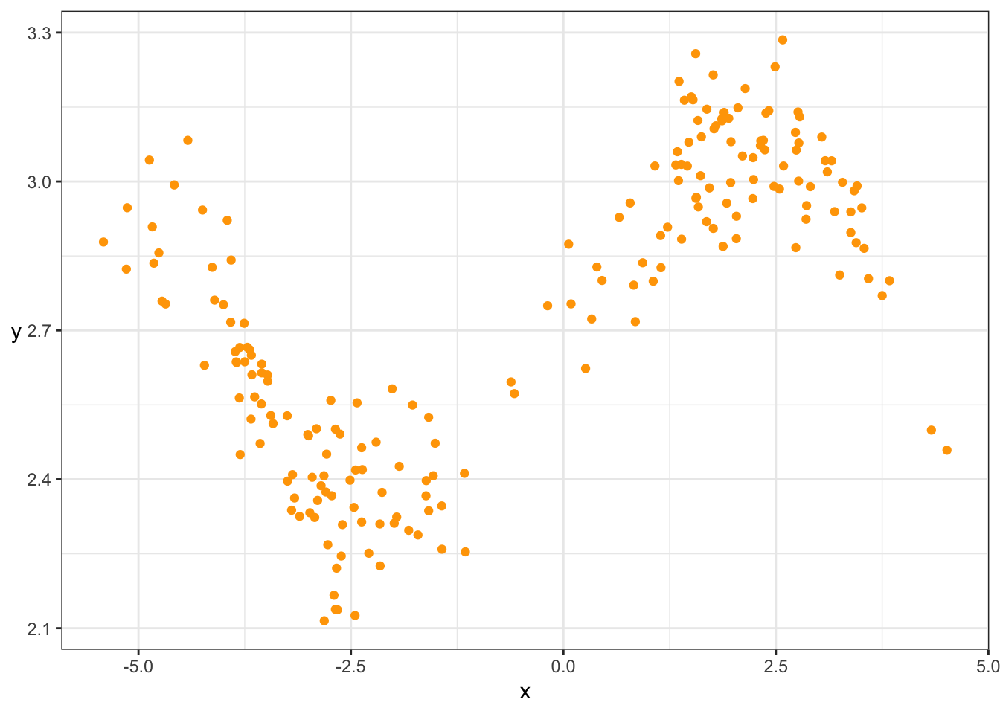

Chapter 11 Estimating parametric model functions
Caution: in a highly developmental stage! See Section 1.1.
11.1 Writing the sample mean as an optimization problem
(DSCI 561 lab2, 2018-2019)
It’s important to know that the sample mean can also be calculated by finding the value that minimizes the sum of squared errors with respect to that value. We’ll explore that here.
Store some numbers in the vector y. Calculate the sample mean of the data, stored in mu_y. This is not worth any marks, but having it as its own question jibes better with the autograder.
We’ve defined sse() below, a function that takes some number and returns the sum of squared “errors” of all values of y with respect to the inputted number. An “error” is defined as the difference between two values.
We’ve also generated a quick plot of this function for you.
sse <- Vectorize(function(m) sum((y - m)^2))
curve(sse, mu_y - 2*sd(y), mu_y + 2*sd(y))Your task: use the optimize() function to find the value that minimizes the sum of squared errors.
Hint: for the interval argument, specify an interval that contains the sample mean.
Important points:
You should recognize that the sample mean minimizes this function! You’ll be seeing the sum of squared errors a lot through the program (mean squared error and R^2 are based on it). This is because the mean is a very popular quantity to model and use as a prediction. If you’re not convinced, play with different numbers to see for yourself.
11.2 Evaluating Model Goodness: Quantiles
The question here is: if we have two or more models that predicts the \(\tau\)-quantile, which model is best? We’ll need some way to score different models to do things such as:
- Choose which predictors to include in a model;
- Choose optimal hyperparameters;
- Estimate parameters in a quantile regression model.
**NOTE**: Mean Squared Error is not appropriate here!! This is very important to remember.
The reason is technical – the MSE is not a proper scoring rule for quantiles. In other words, the MSE does not elicit an honest prediction.
If we’re predicting the median, then the mean absolute error works. This is like the MSE, but instead of squaring the errors, we take the absolute value.
In general, a “correct” scoring rule for the \(\tau\)-quantile is as follows: \[ S = \sum_{i=1}^{n} \rho_{\tau}(Y_i - \hat{Q}_i(\tau)), \] where \(Y_i\) for \(i=1,\ldots,n\) is the response data, \(\hat{Q}_i(\tau)\) are the \(\tau\)-quantile estimates, and \(\rho_{\tau}\) is the check function (also known as the absolute asymmetric deviation function or tick function), given by \[ \rho_{\tau}(s) = (\tau - I(s<0))s \] for real \(s\). This scoring rule is negatively oriented, meaning the lower the score, the better. It cannot be below 0.
Here is a plot of various check functions. Notice that, when \(\tau=0.5\) (corresponding to the median), this is proportional to the absolute value:
base <- ggplot(data.frame(x=c(-2,2)), aes(x)) +
theme_bw() +
labs(y=expression(rho)) +
theme(axis.title.y=element_text(angle=0, vjust=0.5)) +
ylim(c(0, 1.5))
rho <- function(tau) function(x) (tau - (x<0))*x
cowplot::plot_grid(
base + stat_function(fun=rho(0.2)) +
ggtitle(expression(paste(tau, "=0.2"))),
base + stat_function(fun=rho(0.5)) +
ggtitle(expression(paste(tau, "=0.5"))),
base + stat_function(fun=rho(0.8)) +
ggtitle(expression(paste(tau, "=0.8"))),
ncol=3
)## Warning: Removed 4 rows containing missing values (geom_path).
## Warning: Removed 4 rows containing missing values (geom_path).
For quantile regression estimation, we minimize the sum of scores instead of the sum of squared residuals, as in the usual (mean) linear regression.
11.3 Simple Linear Regression
(From lab2, DSCI 561, 2018-2019)
When a predictor is categorical, it’s easy to estimate the mean given a certain predictor value (i.e., given the category): just take the sample average of the data in that group.
Now let’s consider a numeric predictor. Using the iris dataset again with sepal width as a response, use sepal length as the predictor. Here is a scatterplot of the data:
(p_numeric_x <- ggplot(iris, aes(Sepal.Length, Sepal.Width)) +
geom_point(alpha=0.25) +
theme_bw() +
labs(x = "Sepal Length",
y = "Sepal Width"))How can we estimate the mean sepal width (\(Y\)) for any given sepal length (\(X\))? Say we want the mean of \(Y\) at \(X=x\) (for some pre-decided \(x\)). Last week in DSCI 571 Lab 2 Exercise 5, you saw one way of estimating this: calculate the mean sepal width (\(Y\)) using only the \(k\) plants having sepal lengths (\(X\) values) closest to \(x\) (the sepal length you’re interested in).
Methods like this are very powerful estimation methods, but there’s merit in assuming the mean is linear in \(x\): \[E(Y \mid X=x) = \beta_0 + \beta_1 x,\] for some numbers \(\beta_0\) and \(\beta_1\) (to be estimated).
How do we estimate \(\beta_0\) and \(\beta_1\)? In other words, how do we pick an acceptable line? Since we want the line to represent the mean, choose the line that minimizes the sum of squared errors – remember, this is another way of writing the sample average in the univariate case, and now we can generalize the univariate mean to the regression setting in this way.
Is it possible to find a line that has a smaller sum of squared errors than what you found in Exercise 3.3? Why or why not? Is it possible to find a line that has a smaller sum of absolute errors (i.e., the absolute value of the errors)? Elaborate.
11.3.1 Model Specification
You might see linear regression models specified in different ways.
In this exercise, we’re still working with sepal length as the only predictor of sepal width.
Denote \(\beta_0\) as the true intercept of the regression line, and \(\beta_1\) as the true slope. As we’ve said, we’re assuming that the mean of \(Y\) is linear in the predictor: \[E(Y \mid X=x) = \beta_0 + \beta_1 x.\] There are other ways to write this model; i.e., different ways of saying the same thing (not to be confused with different parameterizations). We’ll explore this here.
4.1 rubric={reasoning:3}
One way to write this model is to emphasize that this model holds for every single observation, instead of for a generic \(Y\). Denote \(Y_i\) as the random variable corresponding to the \(i\)’th observation of the response, and \(x_i\) the corresponding observed value of the predictor. Let \(n\) be the sample size.
Your task: specify what goes in the \(?\) in the following equation:
\[E(Y_i | X_i = x_i) = \text{ ?}, \text{ for each } i=1,\ldots,n.\] YOUR ANSWER HERE
4.2 rubric={reasoning:3}
We could also specify how \(Y_i\) itself was supposedly calculated. Your task: specify what goes in the \(?\) in the following equation.
\[Y_i = \text{ ?}, \text{ for each } i=1,\ldots,n.\] Hint: you’ll have to introduce a variable. Be sure to specify any assumptions about this variable so that your equation is equivalent to the one in Exercise 4.1 – this means not putting more assumptions than are necessary, too!
YOUR ANSWER HERE
4.3 rubric={reasoning:3}
Instead of having to say “for each \(i=1,\ldots,n\)”, we could just write out each of the \(n\) equations. It’s actually convenient to do so, but expressed as one equation by using matrix algebra.
We’ll use bold-face to denote vectors. Denote \(\boldsymbol{Y}\) as the vector containing \(Y_1,\ldots,Y_n\) (in that order), and similarly for \(\boldsymbol{X}\) and \(\boldsymbol{x}\). Denote \(\boldsymbol{\beta}\) as the vector containing \(\beta_0\) and \(\beta_1\) (in that order). Then, the same equation becomes: \[E(\boldsymbol{Y} \mid \boldsymbol{X} = \boldsymbol{x}) = \text{? }\boldsymbol{\beta}, \] where “?” is an \(n \times 2\) matrix.
Your task: specify the matrix indicated by “?” in the above equation. It’s probably most convenient to describe what each column contains. Each column is worth approx. 50% of your grade for this question.
YOUR ANSWER HERE
11.4 Linear models in general
Caution: in a highly developmental stage! See Section 1.1.
(DSCI 561 lab 2, 2018-2019)
In general, linear models estimate the mean using \(p\) predictors \(X_1, \ldots, X_p\) (this time, the subscripts denote “predictor number” instead of “observation number”, and the vectors \(\boldsymbol{X}\) and \(\boldsymbol{x}\) contain the predictors, not the observations), according to the following generic equation: \[E(Y \mid \boldsymbol{X}=\boldsymbol{x}) = \beta_0 + \beta_1 x_1 + \cdots + \beta_p x_p.\] We saw that:
a \(K\)-level categorical predictor enters the equation through \(K-1\) binary predictors (relative to a “baseline” category), and a numeric predictor enters the equation as itself. We will now consider using both sepal length (numeric) and species (categorical) as predictors of sepal width.
6.1
Fit a linear regression line to sepal length (\(X\)) vs. sepal width (\(Y\)) for each species independently. Plot the results by facetting by species.
Note that all we’re looking for here is the plot. You can bypass the lm() calls by adding the layer geom_smooth(method=“lm”, se=FALSE), which runs the linear regression separately in each panel.
Although these look like three separate models, it’s still just one model: one specification as to how to estimate the mean. We can write a single equation that describes this specification, using the following variables: \[X_1 = \text{sepal length}\]\[X_2 = 1 \text{ if versicolor, } 0, \text{ otherwise}\]\[X_3 = 1 \text{ if virginica, } 0, \text{ otherwise}\]\[X_4 = X_2 X_1\]\[X_5 = X_3 X_1\] The model becomes: \[E(Y \mid \boldsymbol{X} = \boldsymbol{x}) = \beta_0 + \beta_1 X_1 + \beta_2 X_2 + \beta_3 X_3 + \beta_4 X_4 + \beta_5 X_5 \]
Your task: specify the slope and intercept of the regression lines for each species, in terms of the \(X\)’s and \(\beta\)’s above. We’ve given you the answer for Setosa already. Answer by copying and pasting the below table into the answer cell, and filling in the missing table cells.
Hint: evaluate whatever \(X\)’s you can.
Species Intercept Slope Setosa \(\beta_0\) \(\beta_1\) Versicolor
Virginica
YOUR ANSWER HERE
6.3
\(X_4\) and \(X_5\) are called interaction terms, and are not present by default in the lm() function. In their absence, what are the slopes and intercepts of the regression line for each species? Answer like you did above, in terms of the \(X\)’s and \(\beta\)’s, by filling in the below table. We’ve given you the answer for Setosa already.
Species Intercept Slope Setosa \(\beta_0\) \(\beta_1\) Versicolor
Virginica
YOUR ANSWER HERE
6.4
Make a similar plot as in Exercise 6.1, but for the model without interaction.
11.5 reference-treatment parameterization
Caution: in a highly developmental stage! See Section 1.1.
(From DSCI 561 lab1, 2018-2019)
When data fall into groups, you already know how to estimate the population mean for each group: calculate the sample mean of the data in each group. For example, the mean Sepal.Width of the three species in the iris dataset are:
iris %>%
group_by(Species) %>%
summarize(mean_sepal_width = mean(Sepal.Width))In this exercise, you’ll start exploring a “trick” that linear regression models use so that we can obtain the same mean estimates by evaluating a line. Although it might seem silly to do, especially when we can just do a group_by() and summarize(), using this trick will be very important when we start incorporating more variables in our model, as we’ll soon see in this course.
Next, using the “trick” that linear regression models use, you’ll write these estimates as a line, so that we can obtain the mean estimates by evaluating the line. Here’s the trick: convert the categories to a numeric variable, where one category takes the value 0, and the other takes the value 1.
Let’s convert “first” to 0, and “other” to 1:
x_map <- c(first=0, other=1)
preg <- mutate(preg, num_x = x_map[birth_order])
head(preg)What’s the equation of the line that goes through the mean estimates of both groups? Specify this by storing the slope and (y-) intercept of the line in the variables preg_slope and preg_int, respectively. This line is called the regression line.
In Inf-1 lab3, you made a plot of the data, including the two means with a confidence interval. Here’s the code (using asymptotics to form the CI), zooming in on the “center” of the data (uncomment preg_plot to view the plot):
preg_plot <- preg %>%
group_by(birth_order, num_x) %>%
summarize(mean = mean(prglngth),
n = length(prglngth),
se = sd(prglngth) / sqrt(n)) %>%
ggplot(aes(x = num_x)) +
geom_violin(data = preg,
mapping = aes(y = prglngth, group = birth_order),
adjust = 5) +
geom_point(aes(y = mean), colour = "red") +
geom_errorbar(aes(ymin = mean + qnorm(alpha/2)*se,
ymax = mean - qnorm(alpha/2)*se),
colour = "red",
width = 0.2) +
theme_bw() +
labs(x = "Birth Order",
y = "Pregnancy Length (weeks)") +
ylim(c(30, 50)) +
scale_x_continuous(breaks = enframe(x_map)$value,
labels = enframe(x_map)$name)Add the line to this plot.
Can we always draw a straight line through the means of two groups? Why or why not?
In this lab, we won’t be exploring the trick that linear regression models use when we have multiple groups. But, you’ll explore what we can’t do.
For each species in the iris (three-group) data set, the code below:
calculates the mean sepal width in the column mean_sepwid, along with the standard error of the mean in the se column, placed in the data frame iris_est. plots the raw data with a violin+jitter plot, stored in the variable iris_plot (uncomment it to view it).
(iris_est <- iris %>%
group_by(Species) %>%
summarize(
mean_sepwid = mean(Sepal.Width),
se = sd(Sepal.Width)/sqrt(length(Sepal.Width))
))
iris_plot <- iris %>%
mutate(Species = fct_reorder(Species, Sepal.Width)) %>%
ggplot(aes(Species)) +
geom_violin(aes(y = Sepal.Width)) +
geom_jitter(aes(y = Sepal.Width),
alpha=0.2, width=0.1, size=0.5) +
theme_bw() +
labs(x = "Species",
y = "Sepal Width")
iris_plotYour task is to add the group means and confidence intervals to the plot. You can do this by adding layers to iris_plot. You can use asymptotic theory to calculate the confidence intervals, calculated by:
\[\bar{x} \pm z_{\alpha/2} \text{SE}.\]
Can we fit a single straight line through the mean sepal widths across the three species groups? Why or why not?
11.5.1 More than one category (Lab 2)
In class, we saw two “ways to store information” about groups means – in technical terms, two parameterizations.
The first and most “direct” parameterization is cell-wise parameterization, a fancy way of saying that we’re just going to consider the raw means themselves: one mean for each group. For the three species in the iris dataset, here are estimates of these parameters:
iris %>%
group_by(Species) %>%
summarize(mean_sepal_width = mean(Sepal.Width))The mean of the response (conditional on species) can be written as a linear model, if we call the above means \(\mu_0,\mu_1,\mu_2\) (respectively), and define the following three predictors:
\[X_0 = 1 \text{ if setosa, } 0 \text{ otherwise},\] \[X_1 = 1 \text{ if versicolor, } 0 \text{ otherwise},\] \[X_2 = 1 \text{ if virginica, } 0 \text{ otherwise}.\] Then, the linear model is
\[E(\text{Sepal Width} \mid \text{species}) = \mu_0 X_0 + \mu_1 X_1 + \mu_2 X_2.\] In this exercise, you’ll be exploring another parameterization that’s useful in linear regression: the reference-treatment parameterization.
1.1
To keep things different from lm(), let’s consider the virginica species as our “reference”. The reference-treatment parameterization is then: \[\theta=\mu_{\text{virginica}},\] \[\tau_1=\mu_{\text{versicolor}}-\theta,\] \[\tau_2=\mu_{\text{setosa}}-\theta,\] where \(\mu\) denotes the mean of that species’ sepal width.
Your task: Calculate estimates of these parameters, and store the estimates in the (respective) variables theta, tau1, and tau2.
Provide an interpretation for \(\theta\), \(\tau_1\), and \(\tau_2\). One brief sentence for each is enough.
Let’s now write this information as a single (linear) equation containing:
two predictors \(X_1\) and \(X_2\), and the parameters \(\theta\), \(\tau_1\), and \(\tau_2\). Let’s focus on the predictors first. Define: \[X_1 = 1 \text{ if versicolor, } 0 \text{ otherwise},\] \[X_2 = 1 \text{ if setosa, } 0 \text{ otherwise}.\] We’ve deliberately not defined a predictor for virginica, the reference group.
Your task: What are the values of \(X_1\) and \(X_2\) for each species? Store the values in three length-2 vectors called x_setosa, x_versicolor, and x_virginica.
Use the predictors \(X_1\) and \(X_2\), along with the parameters \(\theta\), \(\tau_1\), and \(\tau_2\), to write a linear equation that returns the species mean \(\mu\). The equation should look like: \[E(Y \mid \text{species}) = (1) + (2)\times(3) + (4)\times(5)\] To use the autograder for this question, specify the order that \(X_1\), \(X_2\), \(\theta\), \(\tau_1\), and \(\tau_2\) are to appear in the equation, respectively, in a vector containing the numbers 1 through 5, named eq_order.
For example, specifying eq_order <- c(1,2,3,4,5) corresponds to the equation \(E(Y \mid \text{species}) = X_1 + X_2 \theta + \tau_1 \tau_2\) (which is not the correct equation)
(Based on your answers to 1.4 and 1.5, can you see why the parameter that goes in place of (1) is also called the “intercept”?)
Now try using lm(): use the iris data with the same predictor and response (don’t include -1 in the formula, so that you end up with a reference-treatment parameterization).
Your task: What’s the reference species? Put the name of the species as a character in the variable iris_lm_ref_species.